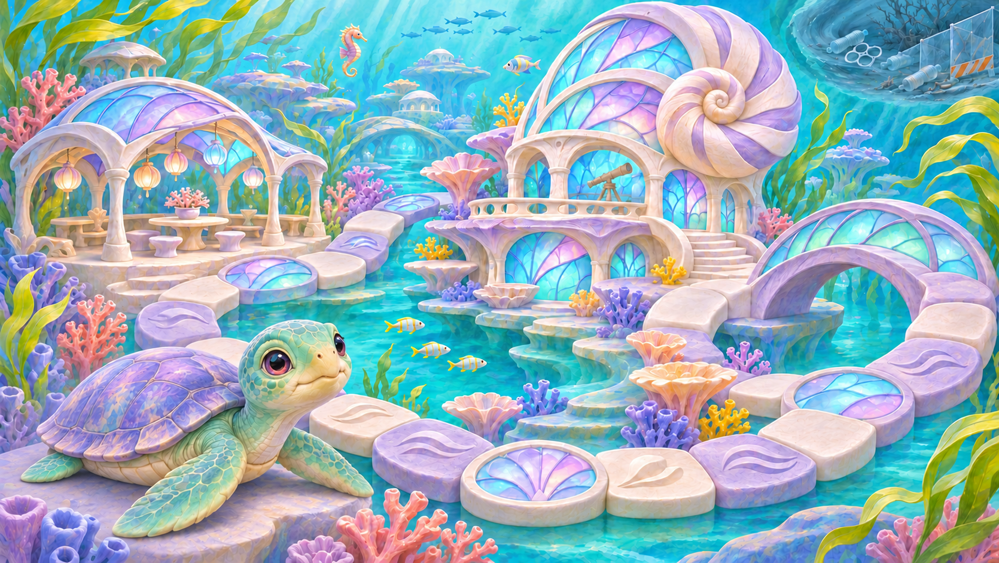

Start with START-HERE.md and GEMINI-HANDOFF.md.
Current character is not accepted. All ten baby Shelly studies were rejected. The approved target is the artwork below; it is a reference illustration, not an in-game frame.

Owner-requested handoff · November 22, 2026 · No real learner seed or account credentials included.